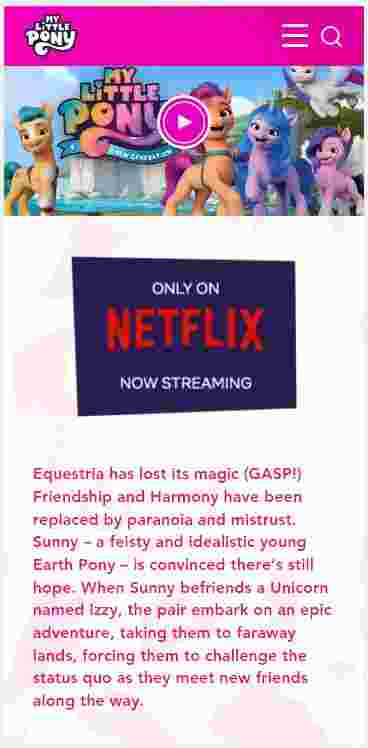

Design Principles Document
Reace Ian Roeloffze
Visual Hierarchy
Hasbrohttps://mylittlepony.hasbro.com/en-me 
This site demonstrates visual hierarchy by first of all making the trailer for the latest show the most visible on the page and a user's attention is immediately directed there. Directly below that is the image that tells the user where this show is streaming along with a synopsis of the above trailer and they will immediately head there if interested. Then attention is drawn to the next section paragraph advertising another site with a release date and where it will be streamed followed by an image. This images truly capures the user and compliments the paragraph. Theere are emphasised buttons on the site along with key visuals for what they represent and all the images are what prompt a user to explore the page further which is where the visual buttons come in to play. This site also demonstrates the law of proximity and repetition really well in that all relevant content is grouped together and that there is always an accompanying image to each section as well as a consistent colour pallete.